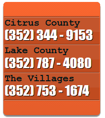

Florida Rooter is your local licensed insured drain and sewer cleaning expert. Our prompt drain cleaning experts will arrive on time with all of the professional equipment and tools needed to repair your clogged drain efficiently. We offer same day service, so you do not have to wait for your lavatory or bath sink drain to be cleaned. We are available for all of your emergency clogged drain cleaning needs. Florida Rooter operates 24 hours a day / 7 days a week, so we can arrange a service time at your convenience.
Low Flat Rate Prices
With our flat rate pricing, there are no hidden fees so you pay less and save money. Take a look at our coupons page for drain cleaning discounts and online specials. Also ask about our senior discount, as well as our multiple service and whole house discounts.
We clean drains…
Does the water in your kitchen sink drain slowly? When you flush your toilet, is there a backup in the shower or bath tub? When flushed, does your toilet overflow? All of these and similar problems result from one thing: clogged plumbing in your house, business, or office building.
Fixing these stopped up pipes is what we specialize in. The stoppages that are plugging the drain pipes in your home must be repaired using professional drain clearing techniques. In many cases, the problem is caused by a clog in the main drain line. The main drain line, also referred to as a sewer line, is the pipe that all of the plumbing waste lines lead to.
This main line then leads to either a septic tank system or a city sewage system. Water gurgling in the toilet, and/or water backing up into the shower or tub when using water are sometimes indications of a clogged main drain line. When you have this or a similar problem, or any problem relating to clogged drains, call Florida Rooter. We have the experience, equipment and techniques needed to get the job done right.
…And get it done right
With over 35 years of experience getting thousands of drains cleaned using state of the art drain and sewer cleaning equipment, we are sure to be able to handle all of your clogged roof drains, plugged floor drains, stopped up garage drains, slow basement drains, and any other clogged drain clearing services you may need. We have the right tools for each job, so we can get the job done right, whether your problem requires a rooter or derooting machine, a drain snake, or one of the other tools we are equipped with. Our sewer and drain cleaning equipment will remove drain clogs and get your pipes cleaned thoroughly.
Clogged Drain Cleaning Services
- Drain cleaning
- Drain clearing
- Clogged drains
- Plugged drains
- Clogged toilet repair
- Slow drains
- Preventative maintenance
- Emergency drain cleaning
- Sewer drain cleaning
- Dishwasher drains
- Vents
- Sanitation sinks
- Mop sink drains
- Motor home drains
- All drain cleaning services
Clogged Drains Cleaned in…
Florida Rooter is ideally located to serve Inverness, FL, Crystal River, FL, Leesburg, FL, Clermont, FL, The Villages, FL, and all surrounding areas. Call us for all of your Inverness, FL Drain Cleaning, Crystal River, FL Drain Cleaning, Leesburg, FL Drain Cleaning, Clermont, FL Drain Cleaning, and The Villages, FL Drain Cleaning service needs. If you have an Inverness, FL Clogged Drain, a Crystal River, FL Clogged Drain, a Leesburg, FL Clogged Drain, a Clermont, FL Clogged Drain, or a The Villages, FL Clogged Drain, call Florida Rooter. Whether your problem is big or small, we can take care of it. Also see our Drain Cleaning Service Areas page for a complete list of the areas that we serve.
Residential and Commercial
We provide residential and commercial, as well as industrial and municipal, drain and sewer clearing services. Whether it’s a clogged urinal at your business, the grease trap drain at your restaurant, or a blocked laundry washing machine drain in your mobile home, when the water stops flowing, we’ll get it going.
CALL FOR SERVICE 24 HOURS,
7 DAYS

All calls are answered promptly and professionally.
Additional information can be found on our contact page.
OUR SERVICES
Basement drains | Bath sink drains |Bath tub drains | Dishwasher drains | Floor drains | Garage drains | Gutter drains | Kitchen sink drains | Laundry drains | Main drain lines | Mobile home drains | Motor home drains | Roof drains | Sanitation sinks | Sewer lines | Shower drains | Toilets | Urinals | Vents | Washing machine drains | Water closets | Any Plumbing Line
OUR SERVICES AREA
Belleview, FL | Beverly Hills, FL | Brooksville, FL | Clermont, FL | Crystal River, FL | Dunnellon, FL | Eustis, FL | Floral City, FL | Fruitland Park, FL | Groveland, FL | Hernando, FL | Homosassa Springs, FL | Inverness, FL | Lady Lake, FL | Lecanto, FL | Leesburg, FL | Mount Dora, FL | Ocala, FL | Summerfield, FL | Tavares, FL | The Villages, FL | Umatilla, FL | Wildwood, FL